Kosmos
Przeglądaj
Planety dzielone są na dwie kategorie: duże gazowe olbrzymy o małej gęstości oraz mniejsze planety skaliste. Według definicji IAU, w Układzie Słonecznym znanych jest 8 planet: cztery wewnętrzne – Merkury, Wenus, Ziemia, Mars i cztery zewnętrzne – Jowisz, Saturn, Uran i Neptun. Z wyjątkiem Merkurego i Wenus, wokół każdej z nich krąży jeden lub więcej księżyców. Do 26 grudnia 2017 roku Encyklopedia pozasłonecznych układów planetarnych stwierdzała istnienie 3727 planet pozasłonecznych.
Poniżej podane są wszysktie planety układu słonecznego w kolejności najblizszej słońcu: Merkury, venus, ziemia, mars, jowisz, satrun, uran, neptun.


Gwiazdozbiór to określony obszar na sferze niebieskiej ustalony przez Międzynarodową Unię Astronomiczną. Gwiazdy wchodzące w skład gwiazdozbiorów nie są ze sobą zazwyczaj fizycznie związane, a ich bliskie położenie na niebie jest wywołane geometrycznym efektem rzutowania ich położeń na sferę niebieską.
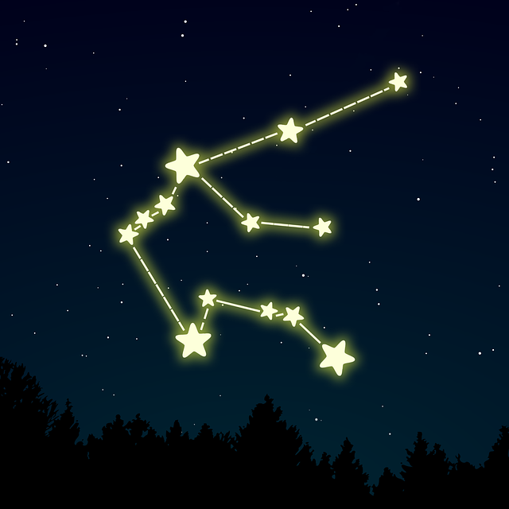 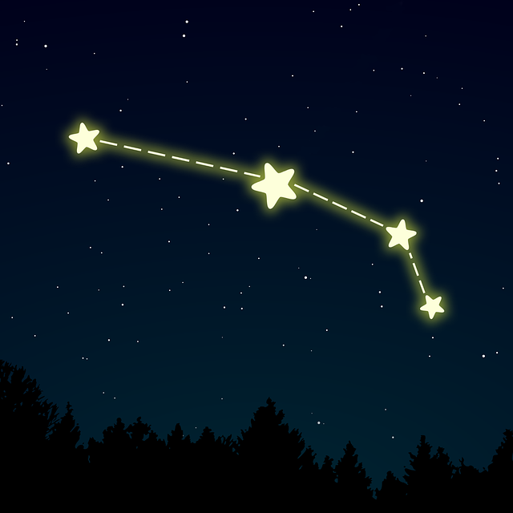 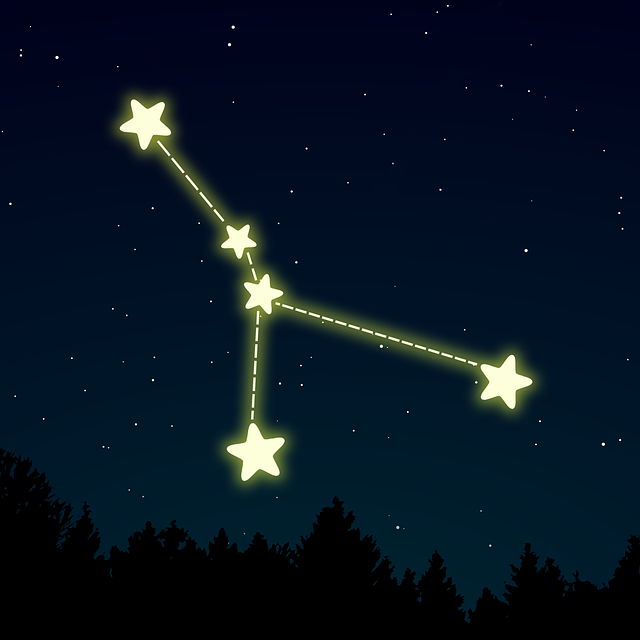 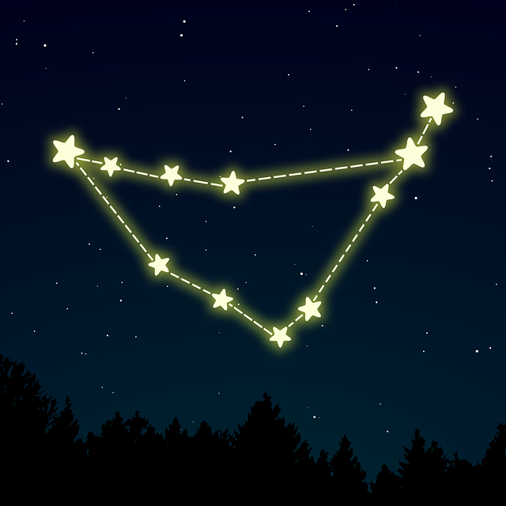 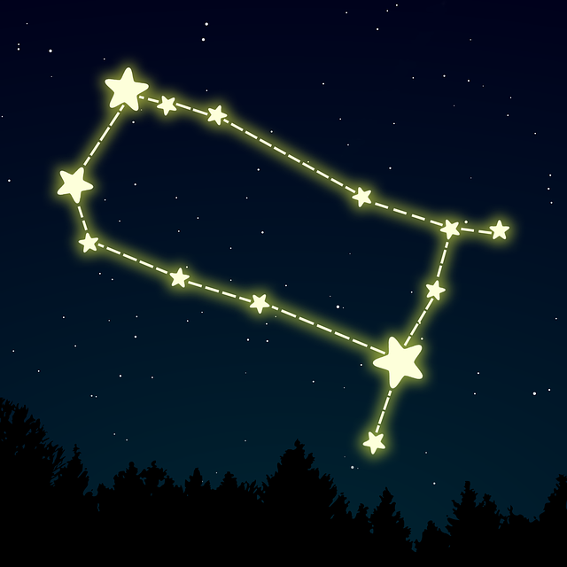 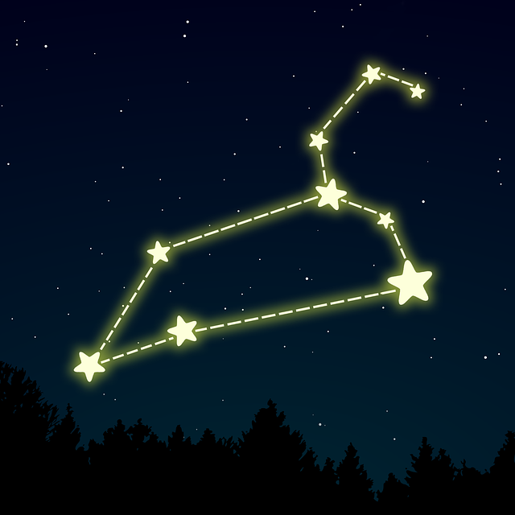 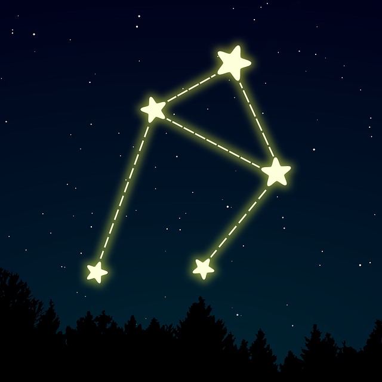 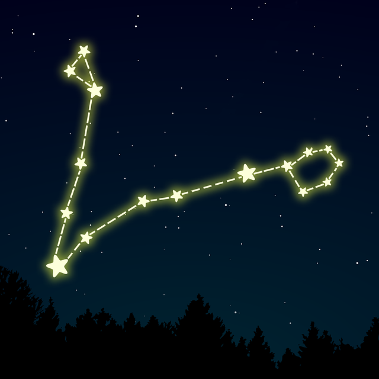 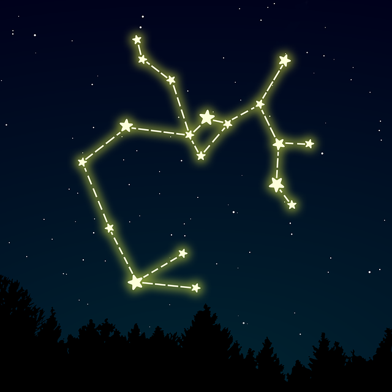 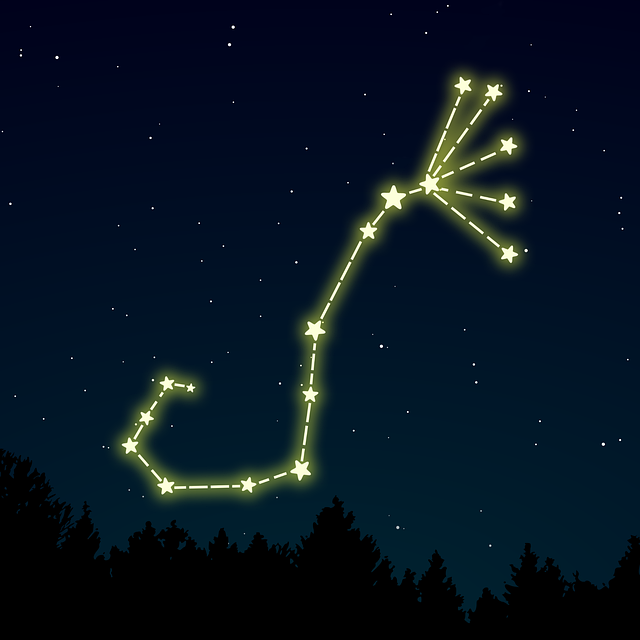 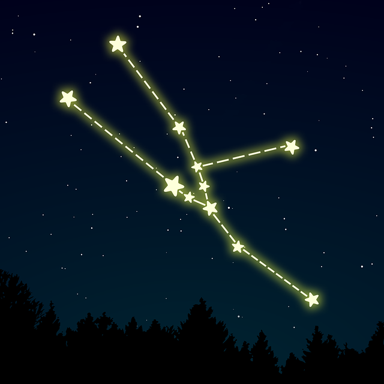 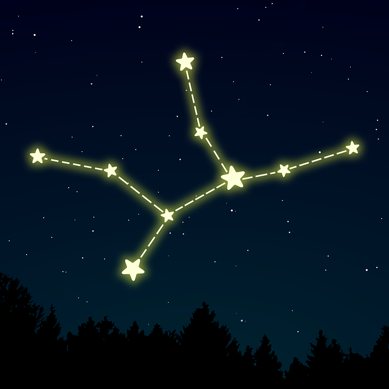
Księżyc to jedyne ciało niebieskie, do którego podróżowali i na którym wylądowali ludzie. Do tej pory na księżycowym globie stanęło dwunastu astronautów Odbija on światło słoneczne. Jest piątym co do wielkości księżycem w Układzie Słonecznym. Posiada on również swoje fazy
Faza Księżyca określa oglądaną z Ziemi część Księżyca oświetloną przez Słońce. Ponieważ Słońce oświetla zawsze (poza zaćmieniami) tylko połowę powierzchni Księżyca, jego fazy są rezultatem oglądania tej połowy pod różnymi kątami spowodowanymi różnymi położeniami Słońca, Ziemi i Księżyca względem siebie.